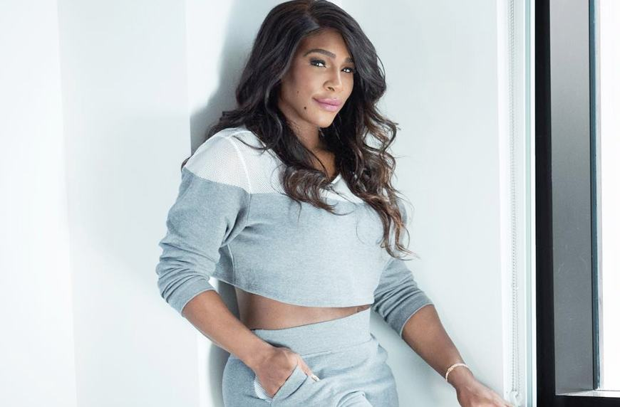
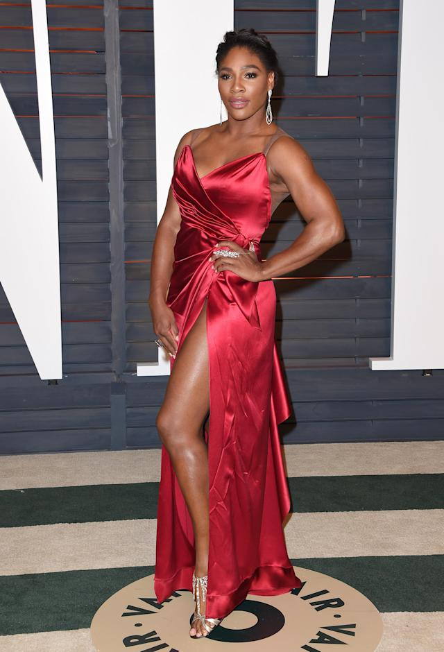

 While Williams is best known for her athletic achievements, she has always had a keen interest in fashion design. From 2000 to 2003, while still maintaining her tennis career, she attended the Art Institute of Fort Lauderdale to study fashion design. And in 2018, she launched her own fashion line, called S by Serena
 Serena brand consists of a mix of on-trend pieces (bike shorts and acid-wash jeans) and timeless staples (T-shirts and pencil skirts). Naturally, this blend is a reflection of Williams's own personal style. "I definitely enjoy keeping up with trends, but with a classic twist," she told Who What Wear.